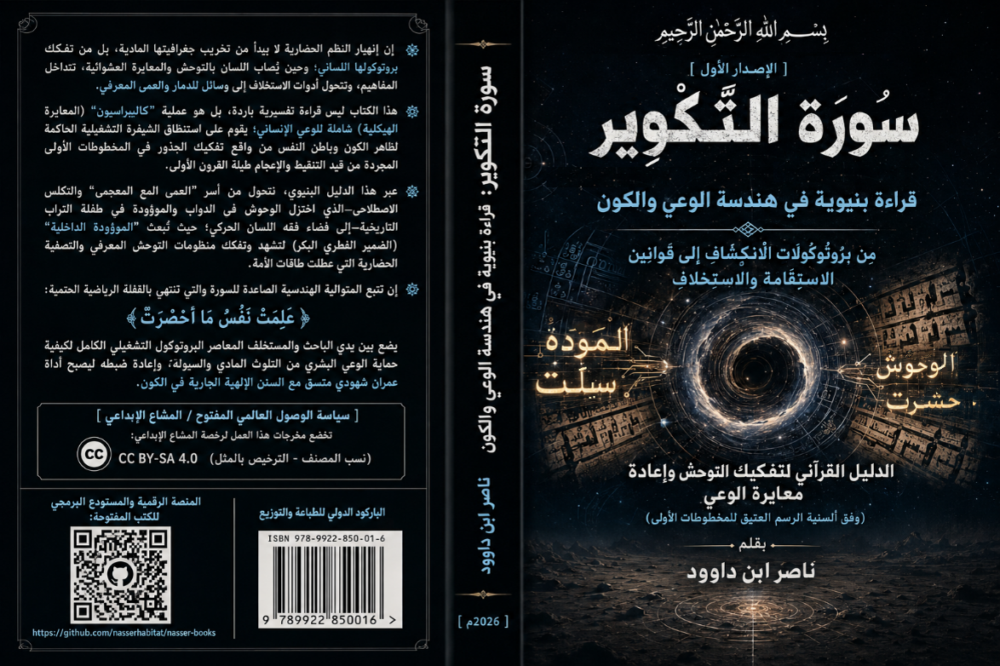

ناصر ابن داوود

نسخة نصية مستخرجة من ملف Word الذي قدمه المؤلف؛ راجع المصدر الأصلي.
جارٍ تجهيز القارئ…
سورة التكوير -قراءة بنيوية في هندسة الوعي والكون
من بروتوكولات الانكشاف إلى قوانين الاستقامة والاستخلاف
الدليل القرآني لتفكيك التوحش وإعادة معايرة الوعي
بقلم ناصر ابن داوود
https://nasserhabitat.github.io/nasser-books-v2/
المقدمة العامة
مدخل إلى سورة التكوير: نحو قراءة بنيوية في هندسة الوعي والكون
إن القراءة الهندسية لسورة التكوير تنطلق من رؤية نسقية متكاملة ترى الوجود المادي والوعي البشري ككيانين مرآتيين متناظرين؛ فالكون ليس شتاتاً من الجسيمات الصامتة العشوائية، بل هو منظومة تشغيلية مضبوطة بدقة فائقة تخضع لقوانين سننية حاكمة وسقوف معرفية كبرى تمنع بعثرتها الوجودية.
تأتي سورة التكوير لتقدم البيان الرياضي والتفكيكي الأعظم للحظة انتقال المنظومة الكون ومجتمعات الاستخلاف من طور "الدنيا والابتلاء العشاري" إلى طور "الفرز والقيامة والمعاينة المطلقة". إنها رحلة هندسية يبدأ أول فصولها بتكوير المصدر الطاقي المركزي "الشمس " وتنتهي باستيقاظ النفس على محضرها الكلي الموثق "علمت نفس ما أحضرت "؛ مما يستدعي صياغة نموذج تفسيري يتجاوز المشهدية البصرية التقليدية البسيطة لولوج عمق "فيزياء الوعي الكوني".
لماذا نعيد قراءة النص القرآني؟
إن إعادة قراءة النص القرآني في هذا العصر ليست ترفاً فكرياً أو تكراراً للموروث التفسيري المعجمي، بل هي ضرورة سننية حتمية لاستنقاذ الأمة من حالة التوحش المعرفي والعمى الحضاري. لقد ركن العقل المعاصر إلى قوالب اصطلاحية متكلسة عزلت اللفظ القرآني عن قواه الكونية، وحولته من كتالوج تشغيلي محرك للعمران إلى نصوص مجردة من فاعليتها الرياضية والنفسية.
إن الحاجة إلى فك شفرة التكوير تنبع من حقيقة أن النظم الحضارية المعاصرة تواجه أعراض "التسعيـر والتوحش" والانفصال الشديد عن الفطرة، وهو ما يتطابق في فيزياء الوعي مع المتواليات الهدمية الواردة في السورة. ومن ثمّ، نُعيد قراءة النص لاسترجاع بروتوكولات الأمان والنجاة، وفهم قوانين التركيب في الدنيا من خلال دراسة ميكانيكية التفكيك في القيامة.
فقه اللسان ومفاتيح القراءة البنيوية
تعتمد مقاربتنا المنهجية على هندسة اللسان "أو مصفوفة فقه اللسان الهيكلي " بدلاً من المعاجم التقليدية الجافة؛ حيث يتعامل هذا المنهج مع الحرف العربي كقوة طاقية واتجاه حركة هندسي محدد داخل الجهاز النطقي، والفيزياء الحيوية للبشر:
الجذر الثلاثي: هو معادلة رياضية تتفاعل فيها القوى الحرفية لإنتاج "مفهوم نسقي كلي" ينسحب على المادة والوعي معاً.
معايرة النظم البنيوية "Calibration ": الانتقال بالمصطلح من الإطار الحسي المحدود "مثل إطار الدابة أو البراري " إلى الإطار السنني الحاكم، بحيث تُفهم "الوحوش" بوصفها الطاقات الباطنية المتوحشة والأنساق المعتزلة للفطرة، ويُفهم "الزوج" كقانون للاقتران النوعي والفرز الآلي للبرامج التشغيلية.
الرسم العتيق والمخطوطات الأولى
إن المدخل الأساس لضبط هذه المعايرة والتحرر من "الحجب البصرية والتفسيرية" الطارئة هو العودة الصارمة إلى الرسم العتيق للمصاحف والمخطوطات الأولى في قرونها الهجرية المتقدمة، حيث يُجرد النص من التنقيط والإعجام والهمز والرتوش المعجمية المضافة لاحقاً.
إن تجريد الرسم يفتح للباحث والمستخلف آفاق "المثاني الدلالية التزامنية"؛ فالرسم المخطوطي الأصلي لـ "الموده سلت " يمنحنا قراءتين متزامنتين تعضد إحداهما الأخرى: الأولى حسية مادية وهي ﴿الموءودة سُئِلَتْ﴾ لتكشف جريمة وأد الطفولة والبراءة، والثانية نفسية بنيوية كونية وهي ﴿المَوَدَّةُ سُلَّتْ/سُيِّلَتْ﴾ لتكشف قانون تفكك وذوبان النسيج الاجتماعي وروابط التراحم البشري في زمن السيولة والتوحش. هذا التعدد البنيوي المنبثق من وحدة الرسم العتيق هو جوهر البناء الهندسي للقرآن العظيم.
خريطة الكتاب ودورة التكوير الحضارية
يتحرك هذا الكتاب وفق هندسة نسقية متصاعدة تتتبع خطوة بخطوة المتوالية الإلهية الواردة في سورة التكوير. حيث يتم رصد الحركة الكونية من أوج تماسكها المادي وقوتها الاستهلاكية في الدنيا، مروراً بخلخلة السقوف والأوتاد، وصولاً إلى تعرية البيانات وعلم النفس المطلق بمآله الجزائي الحتمي.
المخطط المركزي: دورة التكوير الحضارية
" التكوير "
"اللف والحصر الطاقي "
│
▼
" التفكيك " ──> انهيار المنظومات الثابتة "انكدار النجوم، تسيير الجبال "
│
▼
" الانكشاف " ──> سيولة الروابط وتعطيل أدوات الإنتاج "العشار، سجر البحار "
│
▼
" المصادقة " ──> اقتران البرامج التشغيلية والمساءلة الفطرية "تزويج النفوس، استنطاق الموءودة "
│
▼
" الاستقامة " ──> انفتاح البيانات الكلية وسقوط السقوف الأيديولوجية "نشر الصحف، كشط السماء "
│
▼
" الاستخلاف " ──> تشغيل خزان الارتداد الطاقي والتقريب الجذبي "تسعير الجحيم، إزلاف الجنة "
│